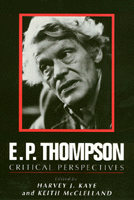

<body bgcolor="#FFFFFF" text="#000000" link="#0000FF" vlink="#CC0000" alink="#CC0000"><center><hr width="350" size="1" align="center" noshade>A wide range of authors discuss the historical, theoretical, and political problems that have been central to Thompson's work<hr width="350" size="1" align="center" noshade><p><a href="https://cdcshoppingcart.uchicago.edu/Cart/ChicagoBook.aspx?ISBN=9780877227304&&PRESS=temple" target="_top">Buy this book!</a> | <a href="https://cdcshoppingcart.uchicago.edu/Cart/Cart.aspx?PRESS=temple" target="_top">View Cart</a> | <a href="https://cdcshoppingcart.uchicago.edu/Cart/Cart.aspx?PRESS=temple" target="_top">Check Out</a></p><p></p></center><!--none//--><h1>E. P. Thompson</h1>
<H2>Critical Perspectives</H2>
<h3>edited by Harvey J. Kaye and Keith McClelland</h3>
<P>cloth 0-87722-730-6 $44.95, May 90, <FONT COLOR=#990033>Out of Print</FONT>
<br>paper 0-87722-742-X $32.95, May 90, <FONT COLOR=#990033>Out of Print</FONT>
<BR> 350 pp
<BR>&nbsp;<br>Restricted: Please note that sales of this book are restricted to the United States of America and its dependencies, the Philippine Islands and Canada.
</P><p>For over thirty years, the work of E. P. Thompson as historian, socialist, and peace activist has been enormously influential. Yet attempts to assess the impact of his work as a whole have been rare. This book brings together a wide range of authors who, in original essays, discuss the historical, theoretical, and political problems that have been central to Thompson�s work. The contributors assess the limits and achievements of his writings, and add to the discussion of issues that remain important for both intellectual and political work.
<BR>&nbsp;<h2>Excerpt</h2><P>Excerpt available at <a href="http://www.temple.edu/tempress">www.temple.edu/tempress</a></p>
<BR>&nbsp;<h2>Contents</h2><P>
<p>Preface &#150 Harvey J. Kaye and Keith McClelland
<br>List of Contributors
<br>Introduction &#150 Keith McClelland
<br>1. Edward Thompson, Social History and Political Culture: The Making of a Working-class Public, 1780-1850 &#150 Geoff Eley
<br>2. How Classes Are Made: Critical Reflections on E. P. Thompson�s Theory of Working-Class Formation &#150 William H. SewelI, Jr.
<br>3. The Tale of Samuel and Jemima: Gender and Working-Class Culture in Early Nineteenth-Century England &#150 Catherine Hall
<br>4. Celebrating Thompson�s Heroes: Social Analysis in History and Anthropology &#150 Renato Rosoldo
<br>5. Falling Through the Cracks: E. P. Thompson and the Debate on the Base and Superstructure &#150 Ellen Meiksins Wood
<br>6. History, Marxism and Theory &#150 Robert Gray
<br>7. E. P. Thompson and 'the Significance of Literature' &#150 John Goode
<br>8. Socialist Humanism &#150 Kate Soper
<br>9. From Total War to Democratic Peace: Exterminism and Historical Pacificism &#150 Martin Shaw
<br>10. E. P. Thompson, the British Marxist Historical Tradition and the Contemporary Crisis &#150 Harvey J. Kaye
<br>Index
</P><BR>&nbsp;<H2>About the Author(s)</H2>
<P><b>Harvey J. Kaye</b> is Professor and Chair of Social Change and Development at the University of Wisconsin-Green Bay.</P>
<P><b>Keith McClelland</b> is Lecturer in History at the University of Reading, UK.</P>
<BR><H2>Subject Categories</H2>
<p><A HREF="/tempress/history.html" TARGET="_top">History</a>
<BR><A HREF="/tempress/sociology.html" TARGET="_top">Sociology</a>
</p>
<p align="center"><a href="https://cdcshoppingcart.uchicago.edu/Cart/ChicagoBook.aspx?ISBN=9780877227304&&PRESS=temple" target="_top">Buy this book!</a> | <a href="https://cdcshoppingcart.uchicago.edu/Cart/Cart.aspx?PRESS=temple" target="_top">View Cart</a> | <a href="https://cdcshoppingcart.uchicago.edu/Cart/Cart.aspx?PRESS=temple" target="_top">Check Out</a></p><p><font face="Arial" size="1"><a href="copyright.html" onMouseOver="window.status='Web Copyright Policy';return true;" onMouseOut="window.status=''" title="Web Copyright Policy">&copy;</a> 2015 <a href="http://www.temple.edu" target="new" onMouseOver="window.status='Link to Temple University home page';return true;" onMouseOut="window.status=''" title="Link to Temple University home page">Temple University</a>. All Rights Reserved. http://www.temple.edu/tempress/titles/782_reg.html</font></p>